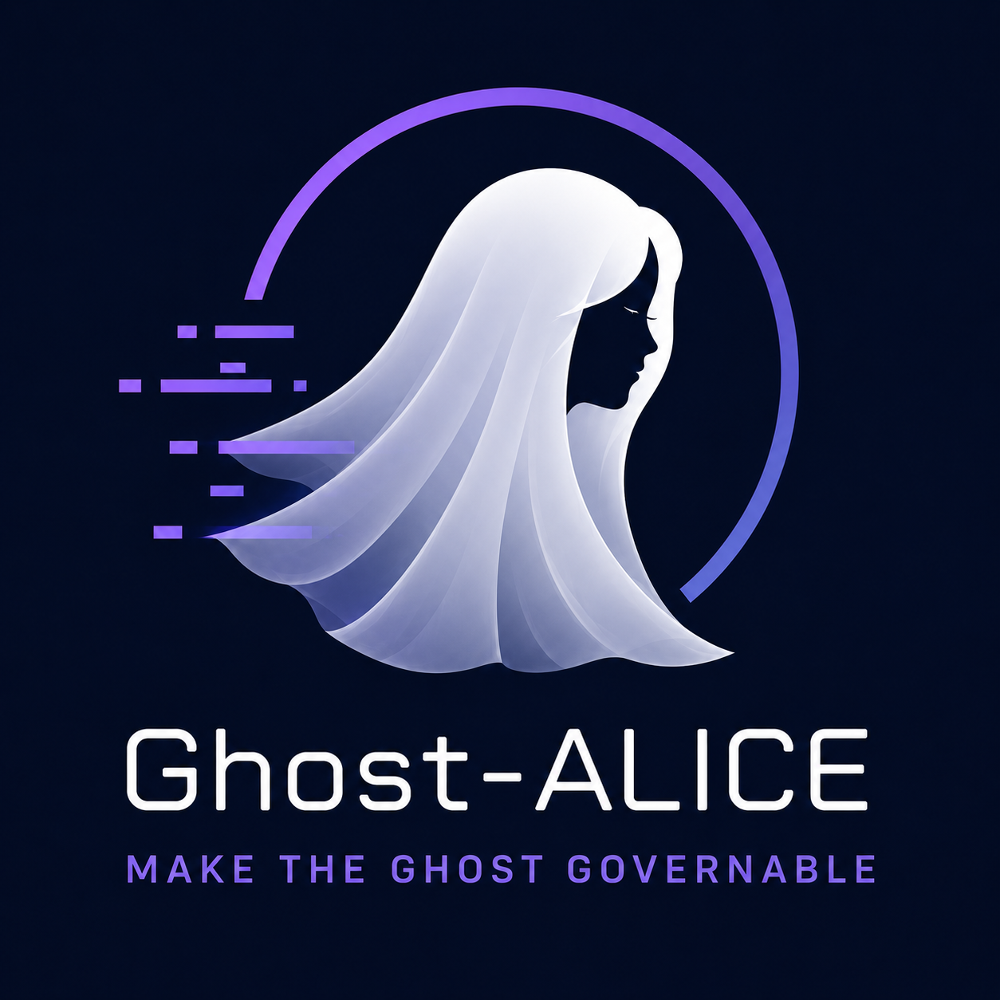

Ghost-ALICE OS

사용자의 목표를 유지하고, 영향을 받은 작업을 수정하며, 각 주장을 원본 증거와 연결합니다.
bash install.sh --addon autopilot복제한 저장소에서 실행하면 설치기가 사용 가능한 에이전트 플랫폼을 감지합니다. 운영체제별 명령과 플랫폼 옵션 보기
Core + Ghost-ALICE Autopilot 0.5.1
이 문서는 Core와 Ghost-ALICE Autopilot 0.5.1을 설명합니다. 로컬 설치와 공개 릴리즈는 별개입니다. Ghost-ALICE Autopilot 0.5.1에는 Core 0.5.1 이상이 필요합니다.
Core 동작
응답 모델은 사용자 목적과 원본을 비교하고, 필요한 작업과 검증 깊이를 선택합니다. 판단 대상은 micro·meso·macro·meta이며, 검증 깊이와는 별개입니다.
flowchart TD
U["사용자 목적과 승인"] --> M["응답 모델"]
O["원본과 도구 관찰"] --> M
M --> V["개별 주장과 원본 비교"]
V --> W["전체 답변과 목적 비교"]
W --> R{"완료 주장 또는 요청된 인증 검토"}
R -->|필요| C["Core의 기록·원본 연결 인증"]
C --> M
R -->|일상 설명| M
M --> H["네이티브 호스트의 답변 표시"]
H --> U
필요한 긴 원문과 답변은 유지합니다. Ghost-ALICE 인계에는 다음 판단에 필요한 현재 결론·미해결 조건·원본 위치를 전달하고, 원문이 다시 필요하면 조회합니다. 이전 네이티브 메시지는 후속 요청에 다시 들어갈 수 있으며, 설치된 어댑터는 지원되는 내용 선택을 적용합니다. 원본 보존·인계 정보 선택·실제 요청 변경은 별개입니다.
근거가 필요한 결과와 충돌하면 응답 모델은 필요한 수정이나 조사를 선택합니다. 미확인 조건은 드러내고, 변하지 않은 근거와 원래 검증 시점은 재사용합니다.
Autopilot 설치 시 확장되는 Core 흐름
Autopilot은 Core가 인증한 근거의 반영과 현재 필요한 계속 작업의 선택을 구분합니다. 승인된 작업·경계·의존 조건·전제 조건을 확인하고 필요한 다음 정보와 원본 참조만 보냅니다. 미충족 기준만으로 요청을 만들지는 않습니다. 네이티브 호스트에 보낸 요청과 실제 실행은 별도로 확인합니다. 설치만으로 실행 권한이 생기지 않습니다.
flowchart TD C["Core가 인증한 근거"] --> A["Autopilot의 근거 반영과 계속 가능한 작업 선택"] F["Core가 인증한 현재 필요성과 다음 필요 정보"] --> A U["승인된 작업·경계·의존 조건·전제 조건"] --> A A -->|필요하고 준비된 승인 작업| H["네이티브 호스트에 계속 요청"] H --> M["응답 모델의 승인된 작업 실행"] A -->|계속 가능한 현재 작업 없음| E["계속 요청 없음"]
문서
실행 명령은 저장소 가이드에서, 온보딩과 배경 설명은 위키에서 확인합니다. 영어판과 한국어판은 같은 동작을 설명합니다.
설치와 업데이트
플랫폼 선택, 공식·사용자 애드온, 관리형 설치를 안내합니다.
문제 해결
상태·진단·보류 병합·훅 로딩 문제를 다룹니다.
제거
사용자 파일을 보존하면서 소유권이 확인된 설치 항목을 제거합니다.
세션 계약
의도, 작업 선택, 완료 증거와 응답 범위를 설명합니다.
플랫폼 호환성
설치기 진입점과 현재 플랫폼별 경계를 설명합니다.
스킬 카탈로그
사용 가능한 워크플로와 담당 참조 문서를 안내합니다.
엄격한 감사는 접근 메타데이터를 기록합니다. Skill-evolution은 개선안을 보고하며, 적용에는 승인된 작업이 필요합니다. Merge-companion은 보존된 로컬 변경을 다룹니다.